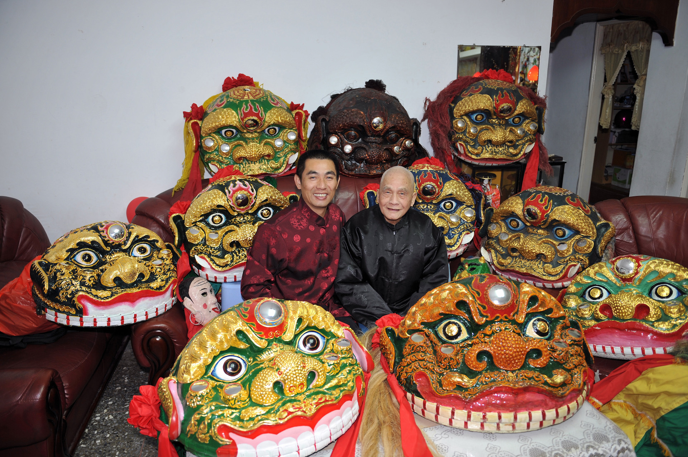

National Treasure Masters

文化資產保存者-傳統工藝
洪來旺老先生出生於1915年，12歲自七星公學校輟學，進入襪廠工作，同年開始拜師學習「太祖拳」的各種拳法：三戰、彩戰、屈戰、五步仔、貓洗臉、四樁、三腳虎；同時學習大刀四門、舞旗花、插丈二、抾槌、中欒、鐵鞭、雙劍、雙刀、盾牌帶等器械。洪來旺17歲時跟著日籍房客學做齒模，學成後幫人做齒模，餘暇鑽研如何將武功招式融入舞獅藝術。他強調：「舞獅技巧大多為武術的手法、步法、身法、腳法等轉換而來，所以舞者若沒有紮實的武術訓練，便無法將「獅」的神采、威猛與靈巧充分地表現出來。」。北投各獅團具紮實武術基礎，獅藝精湛，較知名的有「清江獅團」、「新武獅團」與洪來旺的「中央獅團」，鼎盛時期有20幾個獅團，而有「獅穴」之稱。 洪來旺一生獻身製作獅頭、傳授獅藝及武術，獲得「獅頭旺」尊稱，並於1998年獲台灣省政府頒發終身成就獎，2006年獲全球中華文化藝術薪傳獎，2008年獲全國老人英雄獎，2010年獲頒台北市傳統藝術藝師獎。
文化資產保存者-傳統表演藝術
生於1962年，為洪來旺藝師之子，小小年紀便對藝陣的鑼鼓點充滿興趣，隨著父親學習獅陣鼓藝與武術基本功「三戰」，1976年國中時與同學一同向高健龍教練學習空手道剛柔流，國中畢業才結束空手道的練習，在一次廟會活動中認識南少林派師傅張克治，便拜師習武，其父親也開始傳授太祖拳術，因有獅團與武術根底，當兵時被派任花蓮國富里砲兵營的武獅教練，後來移防馬祖，編入馬祖文化藝術工作大隊，退伍後隨父親友人「蔡李佛」宗師李日生學習廣東獅藝與十八般兵器。